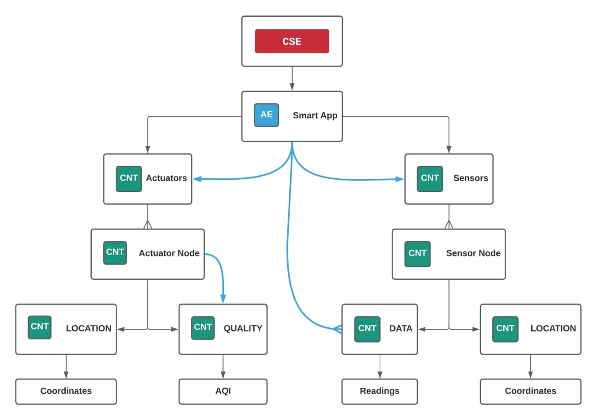
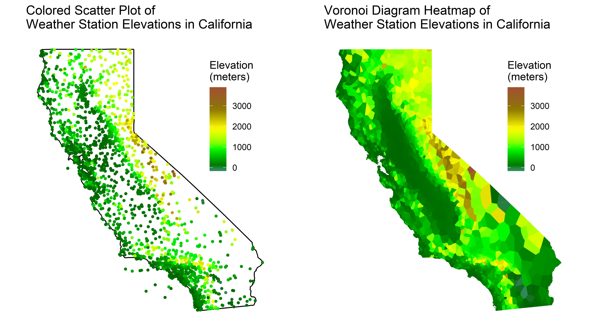

Implementation¶
AE: nodeMCU¶
The nodeMCU is a low-cost open-source IoT platform. Its firmware runs on the ESP8266 Wi-Fi SoC.
Sensor nodes¶
This device has several gas sensors as MG-811 in order to measure the CO2 and other gases in air. It also counts with a LCD display to show some operational information.
Warning
As the time and budget were limited, it was not possible to buy the sensors, instead it was decided to simulate the signals by software in the nodeMCU itself.
The aspect of the first prototype would be like this:

It would consist of a rectangular case with all the components inside and a transparent region in order to see the LCD display. It would have a DC port in order to provide the power to the device.
For ocasions when the power supply is a problem, Lite version was developed. This version would be equiped with a 18650 battery and a small solar panel. In addition, the device wouldn’t have LCD display and would enter in deep sleep when not in use to save energy.

Every nodeMCU sends its data every amount of time (defined by the user) to the CSE over HTTP POST requests.
Each sensor node device, on first start, registers itself at the CSE with the information specified in the header of the .ino script, then creates the LOCATION container with its location, and then the DATA container. To avoid conflicts, the routine is aborted if the AE already exists at the CSE.
Each sensor node has its own container inside sensors group AE. Inside the nodes there are 2 containers, DESCRIPTOR and DATA:
LOCATION has one content instance inside with the location of the device stored in JSON format:
{"lon": -4.45, "lat": 36.71}
DATA its dedicated to store the readings from the device. Each content instance uses a JSON format to store all sensors readings:
{
"co2" : 658,
"o3" : 68,
"no2" : 116,
"so2" : 168
}
Actuator nodes¶
Each actuator node has its own container inside actuators group AE. Inside the nodes there are 2 containers, QUALITY and LOCATION:
QUALITY will store the Air Quality Index (AQI).
LOCATION will store the location of the device in JSON format (same as for Sensor Node)
The function of actuator nodes are to listen to changes in Air Quality Index (AQI) from the QUALITY container. The AQI is calculated with our own formula at the backend based on the readings of 3 nearest sensor nodes to the actuator. The actuator node could be placed on a public place connected to a big screen or LEDs to indicate the level of danger of the toxic gas levels.
Warning
This devices are only prototypes. Correct operation is not guaranteed.
in-CSE: ACME¶
Assumptions
Security is not considered in the current implementation.
Our system architecture is based on OneM2M Service Layer developed by engineers from European Telecomunications Standards Institute. There is a infrastructure node called CSE, a group of nodeMCU devices with gas sensors, and another group with actuators, distribuited all over the territory, and an SmartApp as application entity to visualize the data.
The in-CSE is built over ACME, an open-source light implementation of subset of oneM2M standard specializations written in Python.

Web-app¶
The web-app is written with Vue.js framework. The app fetches the data from the CSE, parses the JSON, and displays it on a map.

Each IoT device is plotted as a point on the map, forming cells for each node according to Voronoi diagrams.

A Voronoi diagram is a nearest neighbor diagram: given a set of generator points, the Voronoi diagram creates nearest neighbor cells. Each cell is formed around one generator point, and the set of points closest to that generator is fully contained in its cell. The resulting diagram can be used to find the nearest generator for an arbitrary point or to interpolate the blank space around each generator to create a heatmap.
In the following image it could be seen the advantages of a Voronoi diagram over a scatter plot:
The app also provides average gas concentrations and a selector of gases to show on map. The app pulls every nodeMCU sensor data from the CSE, and plots it.
Note
This app was also deployed online using Netlify platform: https://elated-hugle-53ac94.netlify.app/
Backend¶
At first, we developed only the frontend, and we thought that it would work fine. At the time of connecting all together, the frontend started to send GET requests, and the CORS (Cross-Origin Resource Sharing) error appeared. The CSE implementation didn’t allow the ‘Access-Control-Allow-Origin’ header, so we needed to develop our own backend that would work as a proxy. The backend would also parse the response JSON to give to the frontend the refined data.